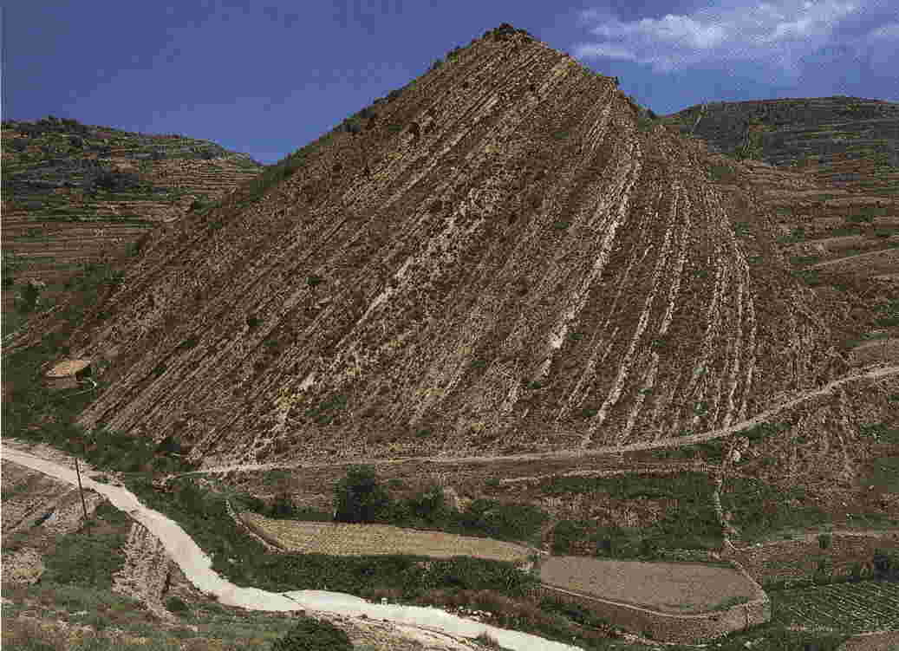

Geología y morfología
En la zona norte de la provincia de Castellón se hallan arcillas cretácicas en varias facies, entre ellas las que se explotaron en Olocau del Rey.

En la zona norte de la provincia se hallan arcillas cretácicas en varias facies. Así, en Morella se explotan las "capas rojas" y en Traiguera y Cervera del Maestre las "Areniscas del Maestrazgo", equivalentes a la formación Utrillas. Distribuidas por la provincia se hallan explotaciones más o menos aisladas, como ocurre en Useras, Zucaina, Cortes de Arenoso, Olocau del Rey, etc., que explotan arcillas cretácicas de la facies Wealdiense.
El presente estudio tiene como objetivo la investigación mineralógica, físico-química y ambiental de los yacimientos cretácicos, muy localizados. En los depósitos más característicos se encuentran lutitas compactas rojo vino o verdosas predominantemente illíticas, con cuarzo generalmente abundante, y de contenidos bajos en carbonatos (inferiores al 5 %). En las arcillas de Morella es frecuente la presencia de cloritas. Es característica la presencia de nódulos ferruginosos de tamaño variable. En general, son materiales muy arenosos; los contenidos en fracción arcilla son bajos (< 20 %), ya que se trata de materiales muy cementados.
Las arcillas wealdienses se hallan intercaladas entre areniscas y calizas arenosas. Los niveles más potentes no superan los 10 m, presentan colores rojizos y son bastante limosas y poco plásticas. La buena explotabilidad de estas arcillas está algo condicionada a los lentejones arenosos intercalados, así como a las monteras calizas.
Descripción geológica
La Formación Arcillas de Morella fue definida en Anadín (1983); según dicho autor, su área de afloramiento se limita al Maestrazgo central y septentrional.
En la serie aflorante puede distinguirse un tramo inferior constituido por arcillas rojas ("capas rojas"), seguidas de margas pertenecientes a la Formación Margas de Forcall, con una barra calcárea intercalada, y un techo constituido por calizas Gargasienses de la Formación Calizas de Villarroya.
En la zona de labores de la cantera se ha estudiado la serie estratigráfica. El techo está formado por areniscas cuarcíticas amarillentas con estratificación de grano fino. A continuación existe una serie de unos 35 m de potencia constituida por limolitas arcillosas alternantes de coloración variada, que va desde el verde al rojo. En la cantera se explotan los niveles estratigráficamente más altos de las capas rojas de Morella, que corresponden a margas arenosas con intercalaciones de areniscas calcáreas que aumentan de espesor hacia el techo.
A continuación se describe la serie en el área tipo de la Formación Arcillas de Morella, tomada por Bastida (1980). El techo se halla constituido por margas ocres, ferruginosas, coronadas por capas de calizas grises de la Formación Margas de Forcall.
- Limolitas arcillosas de colores grises o violáceos, finamente estratificadas con intercalaciones ferruginosas y láminas de yeso. Potencia 6 m.
- Limolitas arcillosas de color gris amarillento, subestratificadas. Potencia 5 m.
- Limolitas arcillosas de color ocre y gris, micáceas, con nódulos de concreciones ferruginosas. Potencia 4 m.
- Areniscas de grano muy fino, de cemento calcáreo y de color ocre ferruginoso.
- Limolitas arcillosas y micáceas, de color azulado. Potencia 1 m.
- Limolitas arcillosas, finamente estratificadas, de colores claros con pajuelas de illita, abundantes en algunos puntos, dispuestas paralelamente a la estratificación. Potencia 3 m.
- Areniscas de cemento ferruginoso y color gris amarillento con abundantes pajuelas de mica. Potencia 1 m.
- Limolitas arcillosas de colores abigarrados, predominando el rojo. Potencia 3,5 m.
- Limolitas laminares de color gris amarillento o gris oscuro, según el contenido en micas. Unos 10 m de potencia.
- Limolitas areniscosas amarillentas, con abundantes granos de cuarzo y pajuelas de mica. Muestran granulometría decreciente. Tamaño aproximado de los granos de cuarzo 0,1 mm. Potencia 1,5 m.
- Limolitas arcillosas micáceas, de color gris verdoso, pero con horizontes donde domina el rojo. Se han considerado como depósitos de arrastre, pudiendo aparecer como conglomerados o paraconglomerados. Potencia 2,5 m.
- Limolitas arcillosas de color rojizo con intercalaciones más claras, pajuelas de mica diseminadas en la masa, no carbonatadas. Unos 5 m de potencia.
- Limolitas areniscosas de color gris amarillento, mostrando una granulación decreciente vertical. Potencia 2,5 m.
- Limolitas rojizas y arcillas con intercalaciones de laminitas areniscosas ferruginosas. Potencia 6 m.
- Areniscas amarillentas de grano medio (0,1 mm), bien estratificadas, ferruginosas.
- Limolitas arcillosas rojas, verdes y amarillentas, donde se observan horizontes de color abigarrado, otros areniscosos y más compactos y otros mucho más finos y ferruginosos.
- Areniscas limolíticas de color gris amarillento, con ligeras intercalaciones de limolitas grises. Potencia 1,5 m.
- Limolitas arcillosas rojizas con intercalación areniscosa en su parte media. Potencia 5 m.
- Limolitas arcillosas gris verdosas con pajuelas de mica paralelas a la estratificación. Alternancia de calizas y margas grises. Potencia 2,5 m.
Paisaje
El relieve se caracteriza por la presencia constante de altiplanos calizos, denominados muelas, que alternan con cuencas deprimidas recorridas por ramblas o riachuelos. Los materiales estudiados se sitúan a los pies del cerro de Morella, tajado por el río Bergantes.
El relieve puede definirse como depresión de valle en área de relieve movido. La superficie del suelo se caracteriza por la presencia de aterrazamientos (agrícola singular) y de una corriente de agua semicontinua. La vegetación existente consiste en el arrinconamiento de los bosques y vegetación clímax preexistente para crear un nuevo paisaje diverso y armónico, el paisaje rural. Los elementos artificiales se hallan discordantes con el paisaje, siendo muy visibles y de diversa complejidad. Se trata de un paraje semiabierto.
La explotación de arcillas se halla en estado de abandono. Las escombreras presentes son montículos de pequeña altura (inferior a los 5 m) y poseen un color rojo intenso, destacando del paisaje por su contraste cromático con el verde o amarillo de la vegetación próxima a la zona alterada. En algunas escombreras se han depositado u ocultado vertidos orgánicos o purines procedentes de las granjas colindantes, aprovechando la litología impermeable del terreno.
Uso agrícola del suelo
Se trata de un área con baja capacidad de usos con riesgo de erosión elevado. Existen zonas de cierto aprovechamiento agrícola dedicadas al cultivo de herbáceos (cereales) combinados con vegetación de matorral.
El suelo, aunque poco potente, está poco protegido contra la erosión, sobre todo en algunos puntos. Su evolución será positiva debido al aporte de materia orgánica y a la acción de la vida vegetal y la microfauna.
Hidrogeología
La zona pertenece hidrogeológicamente al sistema Javalambre-Maestrazgo. Los principales niveles acuíferos se hallan constituidos por materiales calcáreos y dolomíticos jurásicos con potencias superiores a los 500 m y por calizas Gargasienses y dolomías del Cenomaniense-Turonense, con potencias de 150 y 200 m respectivamente. Las intercalaciones calcáreas del Hauteriviense-Barremiense han formado algunos acuíferos locales de escasa importancia.
Las aguas subterráneas de este subsistema son de facies bicarbonatada calcárea y con ligeras mineralizaciones. Son aguas de calidad aceptable y no presentan problemas de contaminación. La litología de la zona de explotación, constituida por margas con intercalaciones de calizas y areniscas, es de carácter impermeable, lo cual reduce todo riesgo de contaminación del acuífero. A pesar del bajo riesgo, deben extremarse todas las precauciones, pues vertidos incontrolados pueden ser arrastrados por las aguas de lluvia hasta cotas inferiores de litologías constituidas por calizas esparíticas y oolíticas permeables por fisuración.
Climatología
La zona se halla situada climatológicamente en un área definida como clima subhúmedo atendiendo a la clasificación de Thornthwaite, que equivale al clima mediterráneo templado fresco según la clasificación climática de Papadakis.
Las precipitaciones son, en ocasiones, torrenciales, llegándose a alcanzar precipitaciones máximas en 24 horas superiores a los 195 mm, coincidiendo por lo general con los meses de septiembre y octubre. La media anual se sitúa entre 600 y 700 mm.
El descenso del aire por la ladera de montaña puede producir inversiones de valle, con embolsamientos que determinan una posible acumulación periódica de contaminantes.
Las arcillas de uso cerámico
La granulometría de la muestra estudiada presenta un 15 % de fracción arcilla, con un rechazo en tamiz de 60 µm del 10 %. El contenido en carbonatos supera el 20 %.
Los minerales presentes en la fracción arcilla son filosilicatos (illita, clorita), calcita, cuarzo y hematites.
El análisis químico se presenta a continuación:
| Elementos mayoritarios | Fracción total (%) |
|---|---|
| SiO2 | 35,69 |
| Al2O3 | 10,33 |
| TiO2 | 0,39 |
| Fe2O3 | 6,71 |
| MnO | 0,05 |
| CaO | 19,32 |
| BaO | 0,75 |
| MgO | 1,80 |
| K2O | 3,49 |
| Na2O | 0,50 |
| P.C. (1050) | 21,63 |
Destaca el elevado contenido en CaO y el bajo contenido en SiO2. La dilatometría es propia de arcillas margosas illíticas con alto contenido en carbonatos.
La plasticidad de la muestra es: LL (límite líquido): 45; LP (límite plástico): 30; IP (índice de plasticidad): 15.
La curva barelatográfica muestra la dilatación de la curva en el segundo tramo de secado, entre el 15 y el 4 % de humedad.
Se trata de arcillas cuyo campo de aplicación es el de aditivos fundentes y desgrasantes en pastas de gres. El comportamiento de estas arcillas en la molienda no es óptimo, debido al alto contenido en cuarzo y la presencia de concreciones ferruginosas.
Colaboración del Dr. Manuel Miguel Jordán Vidal
Departamento de Agroquímica y Medio Ambiente. Profesor de Ciencias de la Tierra / Medio Físico.
Universidad Miguel Hernández, Elche (Alicante).
Bibliografía
- Anadín, P. (1983): Memoria explicativa del Mapa Geológico de España escala 1/200.000. Capítulo estratigrafía.
- Diputación de Castellón (1987): Atlas hidrogeológico de la provincia de Castellón.
- Jordán, M.M.; Sanfeliu, T.; De la Fuente, C.; Ballbé, E. (1993): Ceramics interest Weald clays from Castellón. Third Euro-Ceramics, v. 2, pp. 947-952.
- Jordán, M.M.; Boix, A.; Sanfeliu, T.; Ballbé, E.; De la Fuente, C.; Queralt, I. (1993): Mineralogía de arcillas Wealdienses de interés cerámico. Características Tecnológicas. Técnica Cerámica, nº 216.
- Sancho Comins, J. (1982): Atlas de la provincia de Castellón de la Plana. Publicación Caja de Ahorros y Monte de Piedad de Castellón.
- Sanfeliu, T.; Martín, J.D.; Jordán, M.M. (1999): Recursos Minerales. En: La Provincia de Castellón. Diputación Provincial de Castellón.